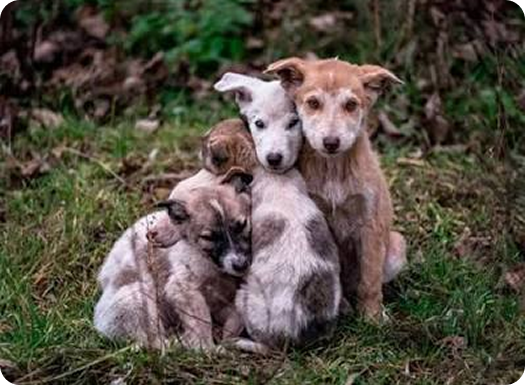
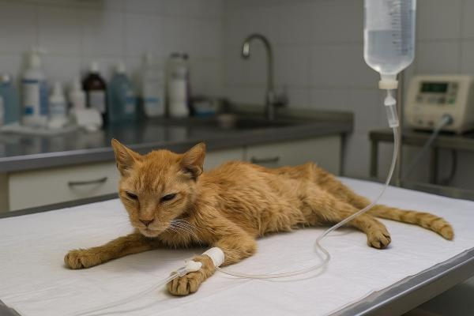
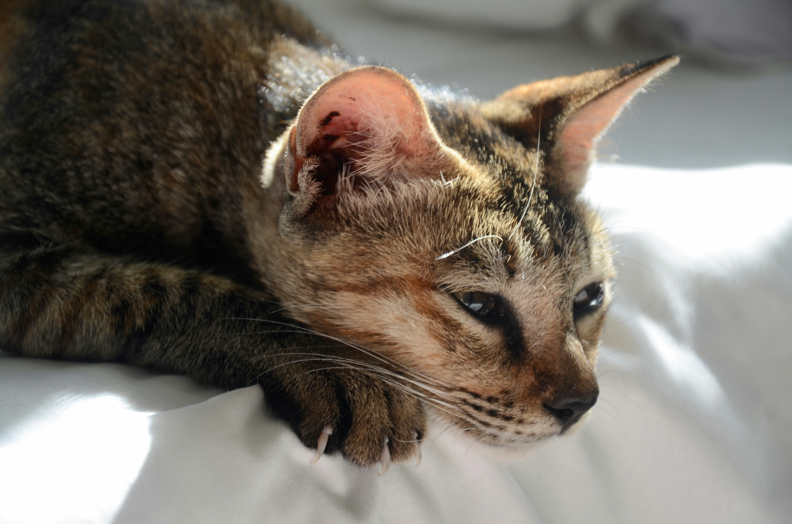
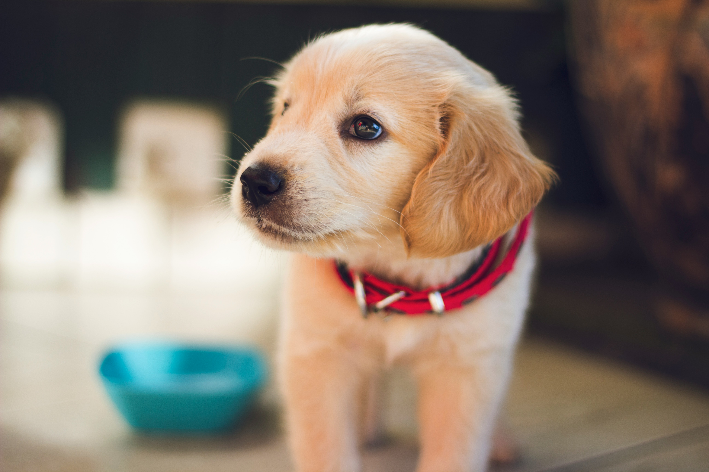
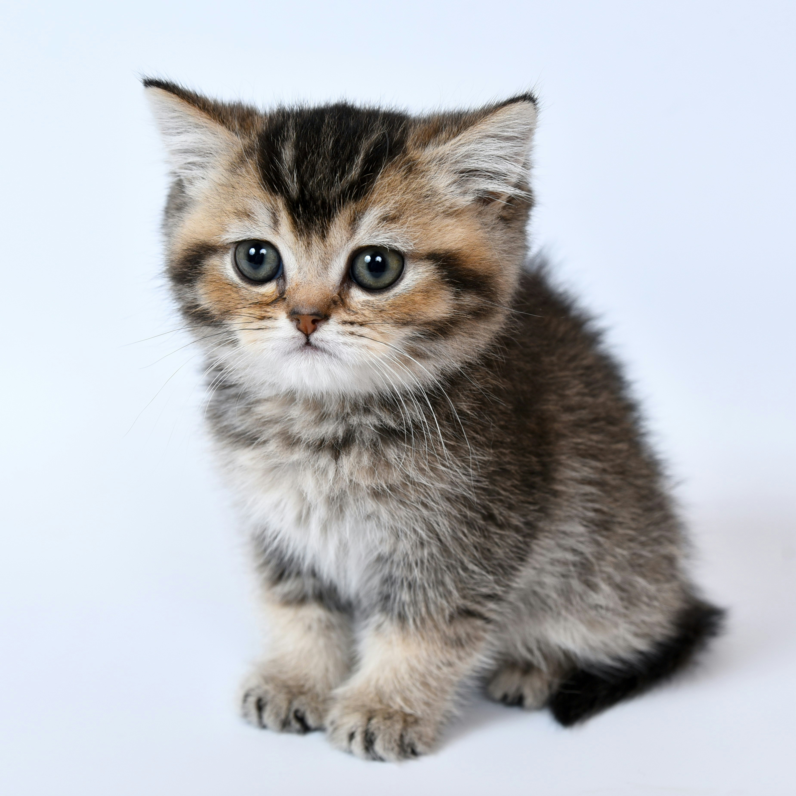
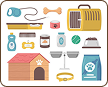

Condição de saúde
O que está acontecendo
Ferido, doente, desidratado ou com feridas leves — do mais urgente ao estável.
Pesquise, filtre e veja pedidos urgentes para animais atualmente sob cuidado do SOS Pet.

Use os filtros para localizar rapidamente pets com condições urgentes de saúde e necessidades imediatas.
Cartões arredondados com condição de saúde, necessidade principal e status atual — toque em “Ver detalhes” para saber como ajudar.
Saúde: ferido • Necessidade: curativo
Alta prioridade
Saúde: desidratado • Necessidade: soro
Suporte médicoSaúde: doente • Necessidade: medicação
Precisa de acolhimento
Saúde: feridas leves • Necessidade: lar temporário
Crítico
Saúde: ferido • Necessidade: transporte
Pronto para retirada
Saúde: doente • Necessidade: comida
Cada cartão mostra três sinais rápidos para ajudar você a decidir.
O que está acontecendo
Ferido, doente, desidratado ou com feridas leves — do mais urgente ao estável.

O que ajuda agora
Suprimentos como curativos, antibióticos, comida, hidratação ou transporte.